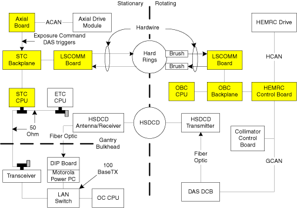
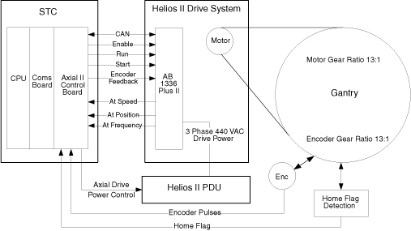
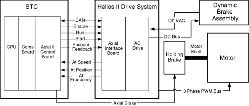
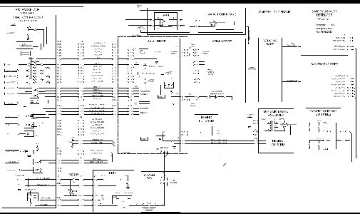
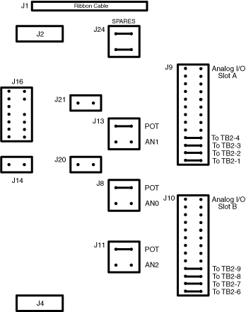

Operating Documentation
Direction 5114045-800, Rev# 10
LightSpeed 4.X Service Information (Advanced)
Operating Documentation |
Table 1: Stationary Gantry FRU versus Function
| FRU | FUNCTION |
|---|---|
| STC Computer | Axial board control |
| LSCOM board control | |
| LAN communications to System Host Control | |
| Axial Board | Scan Start/stop control |
| Operator Hard key monitor | |
| X-ray light control | |
| DAS trigger generation | |
| Gantry axial speed and position control | |
| Axial speed/position monitoring | |
| LSCOM Board | Slip ring communications to/from rotating gantry |
DAS and HV subsystems are located in other sections of this manual.
Illustration 1: Communication Block Diagram

See Illustration 1. Communications between the OC and Table/Gantry computers are performed by a LAN connection and hard-wired slip-rings. Scan data from the DAS is transferred across the HSDCD (High Speed Data Capacitive Device) ring to the DIP board in the console. The DAS data transfer rate is 850Mbaud. The 10base2 thin net 50 ohm LAN cable provides the communication path between the OC computer in the console, the ETC in the table, and the STC in the stationary gantry. The hard slip rings allow the bidirectional transfer of data between the STC and the rotating components, including the OBC. The control rings transfer data at 2.5 Mbaud.
The system utilizes one HSDCD ring and 12 hard wired slip rings. Six rings provide AC and DC power and ground; three provide interlock signals for the HV subsystem; and three provide the communication path between the stationary and rotating components. Only the three communication rings will be discussed here.
| POSSIBLE ELECTRIC SHOCK | |
| EXTREME CAUTION IS NECESSARY WHEN WORKING IN THE SLIP RING AREA, AS BOTH HV DC PRIMARY AND 120 VAC ARE PRESENT AND EXPOSED ON THE RING. | |
| Equipment service can only be performed SAFELY with the main Power "Disconnect" tagged and locked out. |
The hard slip rings communication connection acts as a sub-network between the STC and OBC, but also carries the specific DAS trigger and Exposure Command signals multiplexed within the data stream. Control and status information travels in both directions across the rotating interface along 2 high speed serial links utilizing 3 rings, one inbound and one outbound, both using an isolated ring as signal reference. This provides for excellent noise immunity. Brushes ride on the conductive ring material to provide signal connection to the stationary components, and screws inserted into the back of each ring provide the connection for the rotating components. Serial link control and signal multiplexing/de-multiplexing is provided by 2 common LSCOM boards. LEDs located on these boards indicate communication status of the data paths.
Scan Data travels from the rotating side to the stationary side and ultimately to the reconstruction subsystem through the HSDCD ring. This contact-less path begins at the HSDCD transmitter on the rotating structure. The stationary pickup is an antenna and receiver coupled together. The HSDCD ring and antenna form two plates of a capacitor. The transmitter input and receiver output are fiber-optic connections. Forward error correction is used in this path to ensure extremely high data reliability.
The Axial II Control Board is responsible for interfacing the axial drive control firmware of the gantry Stationary Controller (STC) microprocessor. The hardware involved in the axial servo drive consists of the Axial II Control Board, the Axial Motor Drive, the Axial Motor, Axial Motor Dynamic Brake Assembly, Axial Encoder, Axial Drive Belt and Axial Home Flag. See Illustration 2.
Illustration 2: Axial Control Block Diagram

The Axial Drive Power Contactor in the PDU controls the 3 phase, 440 VAC input of the Axial Motor Drive Module. There are interlocks in the power contactor control for an Axial Enable/Disable switch located on the STC chassis backplane.
The Axial Motor Drive module is supplied with enable, speed, brake and direction information from the Axial II Control Board. The Axial Motor Drive monitors the axial speed and direction internally, as well as receiving axial encoder feedback from the Axial II board for fine speed control. The combination of internal and external control allows the drive module to modulate the frequency of the AC output, allowing the gantry to rotate at a maximum speed of 0.5 seconds per revolution in the clockwise direction. Note, the drive module will not drive in a counter-clockwise direction under normal control.
The Axial Motor is an AC induction type. The axial brake engages the motor shaft and is meant as a static brake to hold the gantry still once it has been positioned by the axial drive.
The motor is coupled to the rotating bearing with a belt, with a gear ratio of 13 motor rotations to 1 gantry bearing rotation. An optical “slip-flag” detector senses a metal flag that rotates through it once every bearing revolution. The slip-flag information is used for axial coincidence as a position reference and over-speed sensing.
The encoder is directly coupled to the rotating bearing next to the Axial Drive Belt. It is interfaced with a direct contact gear as weighted assembly with a 13 to 1 gear ratio, the same as the axial motor to rotating bearing. This arrangement allows for simplified transfer functions for speed control and more accurate positioning of DAS trigger generation versus motor mounted encoder packaging. The axial encoder is an incremental encoder and provides 2048 counts per encoder rotation. The information from the encoder is decoded on the Axial board and used for gantry position and speed control as well as DAS trigger generation. The STC firmware verifies the Axial II board’s encoder counts to be 106496 ± 3 counts per gantry revolution referenced to home coincidence.
The axial dynamic brake assembly is used to dissipate energy originating from the induction motor. Axial braking is accomplished by reducing the frequency applied to the motor leads to a level lower than the current operating point of the motor windings. This is termed negative slip. Negative slip generates electrical field resistance or negative torque within the windings. At the same time the motor windings generate voltage raising the motor lead voltage. This excess voltage is dissipated by the dynamic braking module via load resistors and chopper circuit control via the AXDC bus. This means that 440 VAC is always applied to the Axial Motor Drive module to both accelerate and decelerate the gantry. Loss of this voltage will result in the gantry coasting to stop-this can take more than a minute.
Scan start/stop and Autovoice control are implemented using switches on the console keyboard assembly. A hard-key processor on the keyboard assembly is hard-wired to the axial board via a UART serial link. The hard-key processor monitors the status of the “Start Scan” and “Stop Scan” switches on the keyboard assembly. Upon closure of the Start Scan switch contacts, the hard-key processor sends a “start scan” message to the STC via the axial board, indicating that the scan should start. This communications link is also used to signal the start of Autovoice messages.
| POSSIBLE PHYSICAL INJURY | |
| THE AXIAL DRIVE ENABLE STATUS LED, DS4, ON THE STC CHASSIS BACKPLANE INDICATES STATUS OF THE AXIAL POWER CONTROL CIRCUIT ONLY, NOT THE STATE OF THE AXIAL POWER CONTACTOR. A FAILURE IN THE POWER CONTACTOR COULD ENABLE AXIAL MOTOR DRIVE AND CAUSE UN-COMMANDED MOTION. | |
| Disable the Axial Drive Mechanism before servicing the gantry interior. Whenever servicing the rotating ASSEMBLY, lock the gantry using the locking mechanism. |
The AMD Assembly consists of an Interface Board, AC Drive, Dynamic Brake Assembly, harnesses and 2 power sources. Illustration 3 shows a block diagram of the AMD assembly.
Illustration 3: AMD Hardware Block Diagram

The Axial Motor Drive (AMD) provides three phase power to the Axial AC motor. In addition to the Axial II Control Board, the axial motor requires an external Axial Dynamic Brake Module. The AMD is a 2 part integrated device, Axial Interface board (AIF) and AC Drive. The axial firmware controls the acceleration, run, and deceleration cycles of the axial motor. The axial control firmware resides in the STC CPU and sends drive instructions to the Axial II Control Board (ACB).
The ACB communicates with the AC Drive through the (AIF), located on the AMD assembly. The AMD interprets the instructions and configures itself to execute the commands. The AMD has its own self contained firmware. The drive converts 3 phase 440 VAC input power to three phase Axial HEM (High Efficiency Motor Drive) power. This motor drive power is applied directly to the Axial Motor for acceleration, run and braking functions.
Refer to Illustration 3. Control signals travel from the STC Axial II Control Board to the AMD through the Axial Interface harness. The AIF routes the signals to the AC Drive.
The Axial Control board (ACB), located in the STC chassis, uses the VME bus to communicate with the STC CPU. The ACB uses a CAN (Controller Area Network) serial interface, called the ACAN (AXIAL CAN), and discrete signals to communicate with the AMD. Illustration 4, shows the discrete control signals. The ACAN interface and discrete control signals enter the AIF for control of the AC Drive.
The AMD supplies isolated 12V power (1.2A capability) to the ACAN and Fault circuitry.
Fault detectors and fault status feedback from the ACAN monitor hardware operation. The AMD notifies the ACB when it detects a fault, or a monitored value falls out of tolerance.
The VME interface contains the logic to perform address and data latching, address decoding, and VME handshaking, according to timing specified in PAL documentation, 2147462PDL. All signals pass through the standard VME connector, J1.
Of the seven interrupts defined for the VME bus, the ACB uses level 1, level 2, level 4 and level 5. Other boards on the STC also use the level 1 interrupt, which is wire OR-ed on the backplane.
IRQ1: Interrupt level 1 indicates an over-speed condition. This can be reset by firmware and function retried.
IRQ2: The ACB uses Interrupt level 2 during ACAN communications.
IRQ4: Interrupt level 4 is a normal operating indication the ACB uses for state or positive edge transitions.
Axial Power COntactor >State Change
Exposure Command> Positive edge detect
Option Box (Cardiac R Pulse) > Positive edge detect
Zero Trigger (Scan End) > Positive Edge Detect
Home Flag> Positive edge detect
Axial Sample timer (25 msec timer for speed control)> Positive edge
Table Sync (Used to synchronize scout and Helical Scans with cradle motion)> Positive edge detect.
Smart View foot switch> State transition
Gantry contact (Gantry tape switches)> Positive edge detect
Axial Motor Drive (Faults; AT_SPEED, AT_FREQ, AT_POS)> State transition.
Extra Inputs (Undefined Spares)> State transition
I2C interrupts (ACB mounted temp sense, communications) > STATE TRANSITIONS
IRQ5: The ACB uses interrupt level 5 for console pushbutton, serial communications.
| NOTE: | For a full size version of this illustration, click on the pdf icon below. |
Media File 1: Full Size Illustration: Hardwire Control Signals, Functional Interconnect

Illustration 4: Hardwire Control Signals, Functional Interconnect

In normal operation, the STC CPU sends state commands through the command registers located at address 0xFFAC00 to 0xFFAFFF. This includes Diagnostic testing and status reporting.
The ACB contains a manual board reset pushbutton, S1. Pushing the on-board reset has the same effect as receiving a SYSRST from the VME.
Y1, Y2, Y3, and Y4 on the ACB generate 16MHz, 12MHz, 40Mhz, and 3.6864Mhz clocks respectively. Y1 is used for AX_CAN communications. Y4 is used for console pushbutton communications from the SCIM.
The ACIB is the umbilical cord that links the Axial Motor Drive to the Axial II Control Board. This link consists of the signals listed below. Each signal is a differential pair for noise immunity.
Isolated 12VDC is generated by the HEMRC Control Board that powers the Controller Area Network (CAN) Drivers.
Axial Enable is available to the AMD to determine when gantry rotation begins and ends.
CAN Serial Line is used for the transmission of control signals. It must be terminated by a 120 ohm resistor at the beginning and end of the cable. This particular CAN line is referenced as the Axial CAN (ACAN) bus.
Fault Line is the primary means to inform the Axial II Control Board of a fault. The fault line is asserted by the AMD under the following conditions:
The Controller is reset
A Fault is detected by the controller
Reset is asserted by the STC when it becomes desirable to reset the AMD. The ACB resets the AMD via a command register or during an STC reset.
The ACB uses the 82527 CAN protocol controller (U45) and CAN bus interface circuitry to communicate with the AMD Assembly. This is a bidirectional serial link. The 82527 interrupts the Altera controller (FPGA) with the AX_DRIVE_COMM* signal to indicate a status change of the 82527. The 82527 communicates with the Altera (FPGA) directly via AXADDR and DATA buses on the ACB. The 82527 uses the 16MHz clock for timing. The board AXRESET* signal resets the 82527.
U26 and U24 optically isolate the AX_CAN bus from the ACB board circuitry. U28, the CAN transceiver chip, resides on the isolated side of the CAN interface. The optically isolated side of the AX_CAN receives power from an isolated 12 volt, 125 mA supply located on the AMD. VR1 regulates this 12 volt supply down to 5 volts (+5V_AXCAN). This isolated 5 volt supply provides power to the isolated side of the AX_CAN interface. The AX_CAN output signals are AX_CAN_H and AX_CAN_L. R339 provides the required CAN bus termination for the Axial II Control Board end of the AX_CAN bus.
DS12 illuminates whenever U26 receives data over the AX_CAN bus.
The communications between the ACB and AMD consist of:
Bidirectional CAN serial communications bus: a 125 Kbaud bidirectional serial link, used to convey commands and status information.
AX_Fault signal from the AMD to ACB.
AX_AT-SPD* signal from the AMD to the ACB.
AX_AT_FREQ* signal from the AMD to the ACB.
AX_AT_POS* signal from the AMD to the ACB.
AX_EN_P, AX_EN_N signal from the ACB to the AMD
AX_ENC_CHA/CHB signals from the ACB to the AMD
Three-wire start-stop signal
The opto-isolated Enable, Start, and Stop signals from the ACB to the AMD provide a contact closure as an input to the AMD. The Enable contacts close electrically to enable the AMD, the Start contacts close electrically to start the AMD, and the Stop contacts close electrically to enable the AMD to run and open electrically to stop the AMD. The Enable, Start, and Stop opto-isolators carry 10mA with less than a 3V drop when closed, and withstand 5V when the contacts open.
The fault signal from the AMD to the ACB consists of the AX_FLT and AX_FLT_RTN signal wires. The circuit uses drives with a normally-open fault contact. If either the fault signal wires open electrically, the ACB generates a fault condition. If the AX_SPD_FRQ_RTN signal wire opens during operation, the system can report either AX_AT_SPD or AX_AT_FREQ errors.
The AX_AT_SPD*, AX_AT_FREQ* AND AX_AT_POS* are active low or NO FAULT conditions during normal axial operations. These signals should be high with the gantry rotation idle. The AX_FLT is a normally low signal. If this signal goes high, then the AX_FAULT_CONTACTS in the AMD have opened and you have a fault.
If the motor is at or above Frequency for the phase it is currently in, then AT SPEED will be satisfied and closes. AT SPEED will then open when the phase changes transition, and waits for the motor to be at or above Frequency again for this next phase, then will close if the motor reaches Frequency. This will continue throughout the entire rotation cycle, Accel, Run, and Brake. It is key to know that the AMD module will try to drive the motor to the correct speed, and if it cannot attain the speed requested, the current will max out at a specific level and not drive any higher, the result will be that the motor could not make it to the correct frequency in the allotted time for that phase, and the AT SPEED fault will be seen.
The discrete start and stop signals to the AMD are opto-coupled logic signals. The STOP_AXIAL signal must equal a logic high for the AMD to start acceleration, continue acceleration or run. The logic high STOP_AXIAL signal creates a low impedance between the STOP_AXIAL and STRT_STP_COM output signals, which permits the AMD to accelerate or run.
When the START_AXIAL signal goes to a logic high (causing a low impedance between the START_AXIAL and STRT_STP_COM outputs) and the STOP_AXIAL signal equals a logic high, the AMD begins to accelerate (if it hasn’t already done so). Once acceleration begins, the AMD continues to advance along its acceleration profile, or continues to run, regardless of the logic condition of the START_AXIAL signal. The AMD begins to decelerate (if it is running) whenever the STOP_AXIAL signal goes to a logic low.
This function is performed within the AMD module. Errors are reported to the Axial II Control Board.
CAN implements five error detection mechanisms: three at the message level and two at the bit level.
| NOTE: | CAN will retry up to 128 times before logging an error. |
The following mechanisms are at the message level:
Cyclic Redundancy Checks (CRC) - Every transmitted message contains a 15 bit Cyclic Redundancy Check (CRC) code. The CRC is computed by the transmitter and is based on the message content. All receivers that accept the message perform a similar calculation and flag any errors.
Frame Checks - There are certain predefined bit values that must be transmitted at certain points within any CAN Message Frame. If a receiver detects an invalid bit in one of these positions, a Form Error (sometimes also known as For at Error) will be flagged.
Acknowledgement Error Checks - If a transmitter determines that a message has not been acknowledged, then an ACK Error is flagged.
The following mechanisms are at the bit level:
Bit Monitoring - Any transmitter automatically monitors and compares the actual bit level on the bus with the level that it transmitted. If the two are not the same, then a bit error is flagged.
Bit Stuffing - CAN uses a technique known as bit stuffing as a check on communication integrity. After five consecutive identical bit levels have been transmitted, the transmitter will automatically inject (stuff) a bit of the opposite polarity into the bit stream. Receivers of the message will automatically delete (de-stuff) such bits before processing the message in any way. Because of the bit stuffing rule, if any receiving node detects six consecutive bits of the same level, a stuff error is flagged.
The Axial Motor Drive is a customized version of a commercially available Allen-Bradley Model 1336 Plus II variable frequency AC motor drive. It contains its own microprocessor, power supplies and a three-phase full bridge inverter. The AMD communicates with the Axial II Control Board through a CAN (Controller Area Network) serial bus.
Illustration 5: Axial Motor Drive Encoder Board Jumpers

The AMD Encoder board jumpers J1 and J2 should be set for 5V.
Illustration 6: Axial Motor Drive Control Board Jumpers

The AMD Control board jumpers are all factory default settings. See Illustration 6 for specifics.
The Axial II Control Board receives certain detected error conditions, generally related to communication or functional interfaces to the AMD. Many of these messages contain variable fields. The general description has been provided for clarity.
Table 2: Axial Control Error Messages
| ERROR CODE CLASS 260006500 | MESSAGE TEXT Drive error messages are posted as 260006500. In the body of the error log entry the fault code will be posted in the format of FXX |
|---|---|
| F01 | Undefined Fault. This fault code is undefined and may indicate a defective Drive. Retry operation. If problems persist contact the factory for instructions. |
| F02 | Auxiliary Fault. The interlock between the Chopper Control circuit on the axial I/F Board and the Drive is open. Possible Chopper Control fault or connections to the I/F board. Also check the fuse on the chopper resistor pan. |
| F03 | Power Loss Fault. The Drive internal DC bus remained low for >500mS. Possible low voltage condition on 480 VAC in gantry or power interruption. Also may indicate excessive run or braking power required due to sluggish Motor. |
| F04 | Undervoltage Fault. The Drive internal DC bus voltage dropped below 325V. Possible low voltage condition on 480 VAC in gantry or power interruption. Also, may indicate excessive run or braking power required due to sluggish Motor. |
| F05 | Overvoltage Fault. The Drive internal DC bus voltage has exceeded 810V. Possible failure of axial I/F Board Chopper Control or excessive motor regeneration from AXMotor during braking. |
| F06 | Motor Stall Fault. The Drive output current has exceeded 12.6A for > 4 seconds. Possible Motor frozen bearing or shorted Motor winding. Defective Motor and/or cabling. |
| F07 | Overload Fault. The Drive output current has exceeded 9.7A for an extended time. Possible Motor sticky bearing or shorted Motor winding. Also, possible defective Motor and/or cabling. |
| F08 | Overtemp Fault. The Drive heatsink temperature has exceeded 90C (195F). Check for blocked or dirty heat sink fins. Also check if the gantry ambient temperature has exceeded 40C (104F). |
| F09 | Open Pot Fault. Potentiometer speed control is not used in this system. This fault code indicates a possible corrupted configuration parameter, defective Drive or Control Board. Retry operation. |
| F10 | Serial Fault. This fault code indicates a possible corrupted configur-ation parameter, defective Drive or Control Board. Retry Operation. |
| F11 | Op Error Fault. This fault code indicates a possible corrupted config-uration parameter, defective Drive or Control Board. Retry Operation. |
| F12 | Overcurrent Fault. Check for a short circuit at the drive output or excessive load conditions at the motor. |
| F13 | Ground Fault. Check the motor and external wiring to the drive output terminals for a grounded condition. |
| F14 | Option Error. This fault code is undefined and may indicate a defective Drive. Retry operation. If problems persist contact the factory for instructions. |
| F15 | Motor Thermistor. System detected and open or short in the Motor Thermistor. Retry Check connections to thermistor and motor heat. |
| F16 | Bipolar directional fault detected by the axial drive. |
| F17 | C167 Watchdog. Internal Drive Fault. Perform Reset of the Drive. If the problem. Retry is frequent the Drives main control board is suspect replace drive. |
| F18 | Hardware Trap. Internal Drive Fault. Perform Reset of the Drive. If the problem. Retry is frequent the Drives main control board is suspect replace drive. |
| F19 | Precharge Fault. This fault code indicates a possible hardware failure in the Drive. Retry operation. If problems persist, replace the Drive. |
| F20 | The load loss detect is set to enabled and the drive output torque current was below the load loss level for a time period greater then the load loss time. |
| F21 | Undefined Fault. This fault code is undefined and may indicate a defective Drive. Retry operation. If problems persist contact the factory for instructions. |
| F22 | DSP Reset Fault. Power up has occurred with an open Stop_AX2 or closed Start_AX2* signal. Check Control Board and wiring between Drive and STC. |
| F23 | Loop Overrun Fault. This fault code indicates a possible hardware failure in the Drive. Retry operation. If problems persist, replace the Drive. |
| F24 | Motor Mode Fault. This fault code indicates a possible hardware failure in the Drive. Retry operation. If problems persist, replace the Drive. |
| F25 | Undefined Fault. This fault code is undefined and may indicate a defective Drive. Retry operation. If problems persist contact the factory for instructions. |
| F26 | Power Mode Fault. This fault code indicates a possible hardware failure in the Drive. Retry operation. If problems persist, replace the Drive. |
| F27 | DSP Comm Fault. Internal Drive Fault. Perform Reset of the Drive. If the problem. Retry is frequent the Drives main control board is suspect replace drive. |
| F28 | DSP Timeout Fault. Internal Drive Fault. Perform Reset of the Drive. If the problem. Retry is frequent the Drives main control board is suspect replace drive. |
| F29 | Hertz Error Fault. This fault code indicates an operating frequency parameter was out of range. Possible corrupted configuration parameter, defective Drive or Control Board. Retry Operation. |
| F30 | Hertz Select Fault. This fault code indicates an operating frequency parameter was out of range. Possible corrupted configuration parameter, defective Drive or Control Board. Retry Operation. |
| F31 | DSP Queue Fault. Internal Drive Fault. Perform Reset of the Drive. If the problem. Retry is frequent the Drives main control board is suspect replace drive. |
| F32 | EEprom Fault. This fault code indicates a possible hardware failure in the Drive. Retry operation. If problems persist, replace the Drive. |
| F33 | Max Retries Fault. The Drive unsuccessfully tried to reset a fault. See message(s) above for original problem. |
| F34 | Prm Access Flt. Verify that the [Run Boost] parameter is less than or equal to the [Start Boost] parameter. |
| F35 | Negative Slope Fault. This fault code indicates a Volts / Hertz programming error. Possible corrupted configuration parameter, defective Drive or Control Board. Retry Operation. |
| F36 | Diag C Lim Fault. Check programming of [Cur Lim Trip En] parameter. Check for excess load, improper DC boost setting, DC brake volts set too high or other causes of excess current. |
| F37 | P Jump Error Fault |
| F38 | Phase U Fault\n\A phase to ground short has been detected in the U phase. Check the wiring\n\between the drive and Motor. Check Motor for grounded primary winding. |
| F39 | Phase V Fault. A phase to ground short has been detected in the V phase. Check the wiring between the drive and Motor. Check Motor for grounded primary winding. |
| F40 | Phase W Fault. A phase to ground short has been detected in the W phase. Check the wiring between the drive and Motor. Check Motor for grounded primary winding. |
| F41 | UV Short Fault. A phase to phase short has been detected between the U & V phases. Check the wiring between the drive and Motor. Check Motor for shorted primary. |
| F42 | UW Short Fault. A phase to phase short has been detected between the U & W phases. Check the wiring between the drive and Motor. Check Motor for shorted primary. |
| F43 | VW Short Fault. A phase to phase short has been detected between the V & W phases. Check the wiring between the drive and Motor. Check Motor for shorted primary. |
| F44 | Undefined Fault. This fault code is undefined and may indicate a defective Drive. Retry operation. If problems persist contact the factory for instructions. |
| F45 | Undefined Fault. This fault code is undefined and may indicate a defective Drive. Retry operation. If problems persist contact the factory for instructions. |
| F46 | Power Test Fault. This fault code indicates a possible hardware failure in the Drive. Check all connections to the Power/Driver Board. Retry operation. If problems persist, replace the Drive. |
| F47 | Transistor Saturation Fault. This fault code indicates a possible hardware failure in the Drive. Retry operation. If problems persist, replace the Drive. |
| F48 | Reprogram Fault. Reset the STC or cycle power to the drive. |
| F49 | Undefined Fault. This fault code is undefined and may indicate a defective Drive. Retry operation. If problems persist contact the factory for instructions. |
| F50 | Poles Calc Fault |
| F51 | Background 10ms Over. This fault code indicates a possible hardware failure in the Drive. Retry operation. If problems persist, replace the Drive. |
| F52 | Foreground 10ms Over. This fault code indicates a possible hardware failure in the Drive. Retry operation. If problems persist, replace the Drive. |
| F53 | EE Init Read. This fault code indicates a possible hardware failure in the Drive. Retry operation. If problems persist, replace the Drive. |
| F54 | EE Init Value. This fault code indicates a possible hardware failure in the Drive. Retry operation. If problems persist, replace the Drive. |
| F55 | Temp Sense Open. This fault code indicates a possible hardware failure in the Drive. Retry operation. If problems persist, replace the Drive. |
| F56 | Precharge Open. This fault code indicates a possible hardware failure in the Drive. Retry operation. If problems persist, replace the Drive. |
| F57 | Ground Warning. Check the Motor and external wiring to the drive output terminals for a grounded condition. |
| F58 | Blown Fuse Fault. This fault code indicates a possible hardware failure in the Drive. Retry operation. If problems persist, replace the Drive. |
| F59 | Undefined Fault. This fault code is undefined and may indicate a defective Drive. Retry operation. If problems persist contact the factory for instructions. |
| F60 | Encoder Loss. This indicates that the axial drive can not sense the axial encoder. Possible causes are:Encoder, cabling, unplugged Axial II Control Board or improper axial drive encoder jumper setting. |
| F61 | Mult Prog Input. Multiple functions selected may indicate a defective Drive. Retry More than one function has been programed reset hardware. |
| F62 | III Prog Input. Multiple functions selected may indicate a defective Drive. Retry Config file or Drive Eprom may be corrupt reset hardware. |
| F63 | Shear Pin Fault. Output Amps exceeds program limits Check Axial hardware and belt. Retry Look for slippage in Axial drive hardware or Axial Drive Belt. |
| F64 | Power Overload. This fault code is undefined and may indicate a defective Drive. Retry operation. If problems persist contact the factory for instructions. |
| F65 | Adapter Frequency Error. This fault code indicates an operating frequency parameter was out of range. Possible corrupted configuration parameter, defective Drive or Control Board. Retry Operation. |
| F66 | EEprom Checksum Fault. This fault code indicates a possible hardware failure in the Drive. Retry operation. If problems persist, replace the Drive. |
| F67 | Sync Loss Fault. This fault code is undefined and may indicate a defective Drive. Retry operation. If problems persist contact the factory for instructions. |
| F68 | ROM or RAM Loss Fault. Internal power-up tests did not execute properly. Check Language Module. Retry operation. If problems persist, replace the Drive. |
| F69 | Open Output Fault. An undercurrent condition has been detected in one or more of the Drive output wires. Check the wiring between the drive and the Motor. Check the Motor for an open primary winding. |
| F70 | Phase Unbalance Fault. An imbalance between Drive output phase currents has been detected. Check the wiring between the drive and the Motor. |
This assembly provides logic and control power for the AMD when the Axial Power Contactor is open. During gantry deceleration, excess AMD AXDC bus power is dissipated through chopper load resistors.
The Axial Dynamic Brake Assembly is a modified HEMRC circuit. All components are identical, but configured differently. The following theory describes the Axial Applications only.
The following reference information comes from the HEMRC Interface Board Test Specification, 2145832TST. Refer to the 2145832TST document for any updated information, or for more complete discussion of the Interface Board functions.
| POTENTIALLY LETHAL VOLTAGE SOURCE. | |
| THE CHOPPER CONTROL CIRCUIT ON THE INTERFACE BOARD IS REFERENCED TO THE AXDC - RAIL AT ALL TIMES. THIS IS A POTENTIALLY LETHAL VOLTAGE SOURCE. | |
| DO NOT CONNECT TO GROUND. |
The Interface board Chopper circuit helps dissipate excess energy in the Axial Motor Drive’s internal AXDC bus. The Chopper circuit is always active in this application. As the motor decelerates, it acts as a generator, which converts some of the kinetic energy to current. The Axial Motor Drive channels this current into its internal AXDC bus, which causes the voltage on the bus to rise. If the bus voltage exceeds 810V, the drive will disable itself and abort the braking process. When the braking process aborts, the gantry coasts to a stop. The chopper circuit limits the bus voltage to approximately 750V to prevent the gantry from coasting.
The Axial Motor Drive’s AXDC voltage powers the circuit at J7 of the HEMRC board. Two 7500 ohm 40W chassis mounted dropping resistors, connected at J4 & J5, limit the power supply current to <50 mA. CR4 regulates the nominal 15V to power the Chopper Control circuit. LED DS3 illuminates to indicate the presence of circuit power.
Since the chopper is always enabled, the open collector of AR1-1 floats, which in turn enables the operation of comparator circuit of AR1-2. The voltage sensed at J7-1 is scaled and compared to a fixed 5V reference provided by VR1. When the bus voltage exceeds 750V, AR1-2 goes high, driving Q3 and turning on IGBT Q1. An external 100 ohm, 1000W shunt resistor is connected through a fuse (AXDC+ and J7-5) to the collector of Q1. When Q1 turns on, this shunt resistor is applied to the AXDC bus and discharges the excess energy. When the voltage falls below 700V, AR1-2 goes low and driver transistor Q2 turns off Q1, which disconnects the shunt resistor.
The AR1-13 circuit detects the on state of Q1. Normally, Q1 stays on for a few milliseconds at a time. If it stays on too long, Q1 can damage the shunt resistor. Therefore, when the collector of Q1 goes low for more than ~1ms, AR1-13 floats high to release the RC timer of R26 & C10. If this condition lasts for more than ~130ms, AR1-14 goes high, which generates a fault condition.
Pins 4 & 5 of J8 are normally jumpered together so the normal low state of AR1-14 turns “on” the normally open solid-state relay U2, and closes its output “contact”. The output of U2 passes through J10-9 & 10 to the Axial Motor Drive. When this circuit opens, the drive detects an error condition and aborts all operation. It also notifies the system of an auxiliary drive fault.
The detected fault also turns on Q4, to generate a pulse from T1 at J8-1 & 3, which fires the gate of an external SCR. The SCR is connected between an 8 ohm tap on the shunt resistor and the AXDC-. When the SCR fires, the surge current blows the chopper’s input fuse and isolates the fault from the AXDC bus supply.
The filter board adds differential mode and common mode capacitance to the Axial Motor Drive internal AXDC bus, to reduce the electrical noise created by the switching IGBTs. This board is required for EMI/EMC compatibility.
The chopper resistor assembly provides a high power dissipation load to the AMD bus, if required during axial braking. The chopper resistor configuration resembles the shunt regulator. The Interface Board contains the actual chopper switching element (an IGBT).
When the axial induction motor brakes, it can momentarily generate a current. When this happens, the AMD converts some of the rotational energy to electrical energy and returns it to the internal AXDC bus causing a rise in the bus voltage. If the AXDC bus voltage exceeds ~750V, the chopper IGBT turns on and discharges the excess energy through resistors A4R1 & A4R2. The IGBT turns off when the voltage drops below ~700V. This process continues as long as necessary to keep the bus voltage below ~750V. Normally this action occurs for less than 5 seconds during the brake cycle. At all other times the IGBT remains off and essentially “disconnects” the resistors from the bus. The intermittent duty cycles permits the use of resistors with a much lower power rating than a continuous duty cycle would require.
Because the circuit uses the intermittent duty rated resistors A4R1 & A4R2, it contains fuse A4F1 to isolate the resistors from the bus in the event of a control failure. If a fault occurs, A4SCR1 fires and crowbars the bus. The anode of A4SCR1 connects to a tap on resistor A4R1, nominally set to 8 ohms from the fused end. When the SCR fires, the high current load it creates causes fuse A4F1 to open and disconnect the resistor assembly from the bus, to isolate the fault.
500VA isolation transformer, T1, is configured as a nominal 115:380 V step-up transformer. T1 provides the 24 hour power to the AMD that is needed to maintain communication with the ACB. Diodes inside the AMD rectify the ~380VAC to create a nominal 500 VDC bus (no load, with 120 VAC input). DC to DC converters inside the drive develop power for its internal logic from this bus. T1 should normally never provide power for axial braking.
Bridge Rectifier CR1 connects in series between the T1 step-up transformer and the AMD AXDC bus as the logic and control power source for the drive. The drive internal bus voltage always equals the greater of either the braking voltage or the T1 voltage.
Chassis mounted dropping resistors R4 & R5 limit the chopper circuit power supply current derived from the AMD AXDC bus to <50 mA. The Chopper Control supply is referenced to the AXDC bus return, NOT to ground. NEVER reference this voltage to ground.
| POTENTIALLY LETHAL VOLTAGE SOURCE. | |
| THE CHOPPER CONTROL CIRCUIT ON THE INTERFACE BOARD IS REFERENCED TO THE AMD AXDC BUS AT ALL TIMES. THIS IS A POTENTIALLY LETHAL VOLTAGE SOURCE. | |
| DO NOT CONNECT TO GROUND. VARIOUS COMPONENTS, INCLUDING THE CHOPPER RESISTOR ASSEMBLY AND HEMRC INTERFACE BOARD, ARE REFERENCED TO THE AXIAL MOTOR DRIVE AXDC BUS AT ALL TIMES. THIS IS A POTENTIALLY LETHAL VOLTAGE SOURCE. DO NOT CONNECT TO GROUND.THE HEMRC INTERFACE BOARD CONTAINS NO TEST POINTS. ALL ACTIVE CIRCUITRY IS HIGH IMPEDANCE AND TIED TO HAZARDOUS VOLTAGES. DO NOT PROBE. |
A4R1 & A4R2 TAP ADJUSTMENTS
Verify/Align the connection tabs and hardware of the chopper resistors A4R1 and A4R2 so they clear any sheet metal by at least 0.5in.
Adjust the tap band on chopper resistor A4R1 to 8 ohms ± 0.5 ohms, with respect to the end connected to fuse A4F1.
The tap band on chopper resistor A4R2 is not used, but you still must secure the band in place to prevent dielectric failure to the adjacent sheet metal. To minimize confusion, adjust the tap band to 8 ± 0.5 ohms, with respect to the end connected to A2J7-5.
The axial board provides a set of relay contacts, K1, to control a relay in the PDU. The PDU relay closes a set of contacts that drive the site X-ray ON Light. The relay contacts are closed (x-ray light turned on) whenever the Axial II Control Board commands X-rays to the OBC. The axial board must drive a 24V 100mA LED mounted in the rear of the Gantry. This light, separate from the Gantry display, will indicate the presence of the axial board’s x-ray command and will coincide with the PDU x-ray ON light signal. The light is controlled by firmware rather than hardware so that it can be coordinated with actual x-ray state and not just the x-ray exposure command. STC firmware receives notification via the communication slip rings from the OBC when x-rays turn on and off.